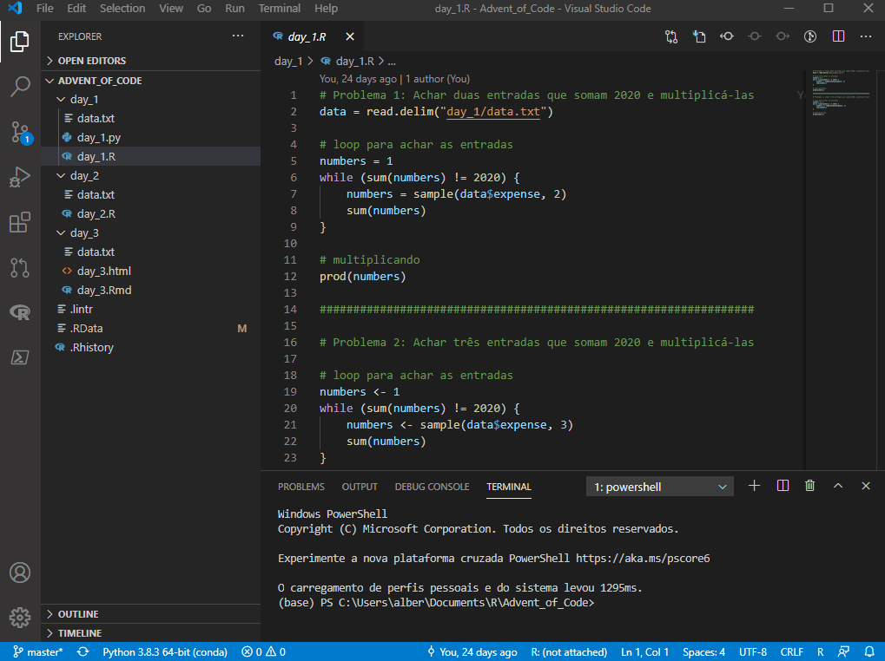

PRIMEIROS PASSOS
Com o VSCode instalado, você verá a tela de boas vindas, que se parece com isso:

A primeira coisa a se notar é que o conceito de projeto (.Rproj) não existe no VSCode. Você tem uma pasta e pronto, todos os caminhos relativos apontam para ela.
Na barra lateral, o explorer te dará a opção de abrir uma pasta (um projeto) ou clonar um repositório. Abrindo minha pasta do Advent of Code 2020, você verá meus diretórios e arquivos à esquerda. Há códigos em Python e em R. Posso abrí-los e organizá-los da forma que eu quiser. Os terminais ficam logo abaixo e também podem ser movidos para qualquer outra parte.

As extensões podem ser instaladas pelo menu à esquerda. O próprio VSCode irá recomendar a instalação de extensões quando você abrir algum tipo de arquivo que não tenha interpretador ou formatter instalado, por exemplo.

Importante: não instale a extensão RTools junto com as extensões citadas acima, pois não são complementares e irá causar conflitos.
Com as extensões instaladas, vamos às configurações. Primeiro, abra a command palette com ctrl+shift+p. Através dela você poderá acessar diversos comandos e atalhos no VSCode, como:
- criação de novo terminal (R, Python etc)
- lançar os RStudio addins
- compilar arquivos RMarkdown (knit .Rmd)
- acessar configurações e teclas de atalho
- instalar pacotes
- formatar arquivos e MUITOS outros
Acessando as configurações do VSCode, podemos configurar tanto o editor quanto suas extensões:

Aqui estão as que utilizo atualmente. Altere conforme necessário e sua preferência.
{
// VSCode setup
"terminal.integrated.shell.windows": "C:\\WINDOWS\\System32\\WindowsPowerShell\\v1.0\\powershell.exe",
"editor.formatOnPaste": true, // recomendado
"editor.formatOnType": true, // recomendado
"diffEditor.ignoreTrimWhitespace": false,
"files.autoSave": "off",
// Python setup
"python.pythonPath": "C:\\Users\\alber\\AppData\\Local\\Programs\\anaconda3\\python.exe",
"jupyter.alwaysTrustNotebooks": true,
// R setup
"[r]": { // obrigatório
"editor.defaultFormatter": "REditorSupport.r-lsp"
},
"files.associations": { // obrigatório
"*.rmd": "markdown",
"*.Rmd": "rmd"
},
"r.sessionWatcher": true, // obrigatório
"r.bracketedPaste": true, // obrigatório
"r.rterm.windows": "C:\\Users\\alber\\AppData\\Local\\Programs\\anaconda3\\Scripts\\radian.exe", // caso tenha instalado o Radian
"r.rpath.windows": "C:\\Program Files\\R\\R-4.0.3\\bin\\R.exe", // obrigatório
"r.lsp.debug": true, // obrigatório
"r.alwaysUseActiveTerminal": true, // obrigatório
"r.rtermSendDelay": 0,
}Também são necessárias algumas configurações no .Rprofile:
# opções
options(
# permitir RStudio Addins no VSCode
vsc.rstudioapi = TRUE,
# alterar o schema de highlight no console Radian
radian.color_scheme = "native",
# adicionar code completion após $
languageserver.server_capabilities = list(
signatureHelpProvider = list(triggerCharacters = list("(", ",", "$")),
completionProvider = list(
resolveProvider = TRUE, triggerCharacters = list(".", ":", "$")
)
)
)
# gráficos interativos no VSCode com o {httpgd}
if (interactive() && Sys.getenv("TERM_PROGRAM") == "vscode") {
if ("httpgd" %in% .packages(all.available = TRUE)) {
options(vsc.plot = FALSE)
options(device = function(...) {
httpgd::httpgd()
.vsc.browser(httpgd::httpgdURL(), viewer = "Beside")
})
}
}Importante: não instalar o {httpgd} ou deixar de incluir essa configuração no .Rprofile vai fazer com que seus gráficos sejam plotados numa janela com tamanho fixo, sem a possibilidade de manuipular o tamanho do plot interativamente.